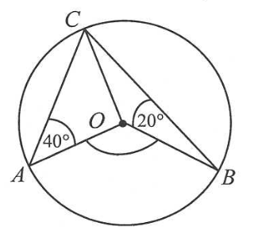
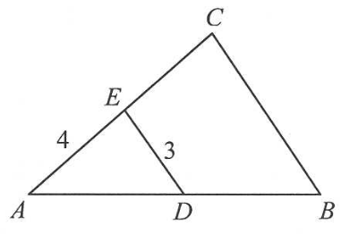
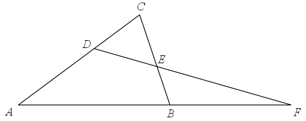
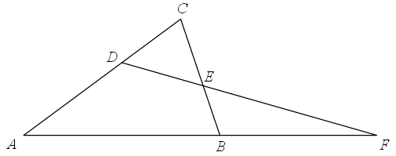
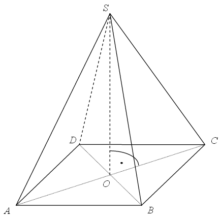

Matura 2014 sierpień
Wskaż nierówność, która opisuje przedział zaznaczony na osi liczbowej. 
A.\(|x-7|\lt 15 \)
B.\(|x-7|>15 \)
C.\(|x-15|\lt 7 \)
D.\(|x-15|>7 \)
A
Liczba \( \frac{1}{2}\cdot 2^{2014} \) jest równa
A.\(2^{2013} \)
B.\(2^{2012} \)
C.\(2^{1007} \)
D.\(1^{2014} \)
A
Liczba \( c=\log_{3}2 \). Wtedy
A.\(c^3=2 \)
B.\(3^c=2 \)
C.\(3^2=c \)
D.\(c^2=3 \)
B
Liczba \( {\left ( \sqrt{5}-\sqrt{3} \right )}^2+2\sqrt{15} \) jest równa
A.\(2+2\sqrt{15} \)
B.\(8 \)
C.\(2+4\sqrt{15} \)
D.\(2 \)
B
Julia połowę swoich oszczędności przeznaczyła na prezent dla Maćka. \(10\%\) tego,
co jej zostało, przeznaczyła na prezent dla Dominiki. Ile procent oszczędności pozostało Julii?
A.\(25 \)
B.\(40 \)
C.\(45 \)
D.\(55 \)
C
Rozwiązaniem równania \( \frac{x-5}{7-x}=\frac{1}{3} \) jest liczba
A.\(-11 \)
B.\(\frac{11}{2} \)
C.\(\frac{2}{11} \)
D.\(11 \)
B
Jeśli \( a=\frac{b}{c-b} \), to
A.\(b=\frac{a+1}{a\cdot c} \)
B.\(b=\frac{a\cdot c}{a+1} \)
C.\(b=\frac{a\cdot c}{a-1} \)
D.\(b=\frac{a-1}{a\cdot c} \)
B
Dziedziną funkcji \( f \) jest przedział 
A.\(\langle 0,3 \rangle \)
B.\((0, 8 \rangle \)
C.\(\langle -3,3 \rangle \)
D.\((-3, 8 \rangle \)
D
Największą wartością funkcji \( f \) jest
A.\(3 \)
B.\(0 \)
C.\(-3 \)
D.\(8 \)
A
Wskaż rysunek, na którym przedstawiony jest wykres funkcji kwadratowej, określonej
wzorem \( f(x)=(x-2)(x+4) \) . 
D
Funkcja kwadratowa, której zbiorem wartości jest przedział \( ( -\infty, -3\rangle
\) , może być określona wzorem
A.\(y=(x+2)^2-3 \)
B.\(y=-(x+3)^2 \)
C.\(y=-(x-2)^2-3 \)
D.\(y=-x^2+3 \)
C
Funkcja liniowa \( f(x)=ax+b\ \) jest rosnąca i ma dodatnie miejsce zerowe. Stąd
wynika, że
A.\(a>0\) i \( b>0 \)
B.\(a\lt 0\) i \( b\lt 0 \)
C.\(a\lt 0\) i \( b>0 \)
D.\(a>0\) i \( b\lt 0 \)
D
Suma dziesięciu początkowych wyrazów ciągu arytmetycznego \( (a_n) \) jest równa \(
35 \). Pierwszy wyraz \( a_1 \) tego ciągu jest równy \( 3 \). Wtedy
A.\(a_{10}=\frac{7}{2} \)
B.\(a_{10}=4 \)
C.\(a_{10}=\frac{32}{5} \)
D.\(a_{10}=32 \)
B
Ciąg geometryczny \( (a_n) \) określony jest wzorem \( a_n=-\frac{3^n}{4} \) dla \(
n\ge 1 \). Iloraz tego ciągu jest równy
A.\(-3 \)
B.\(-\frac{3}{4} \)
C.\(\frac{3}{4} \)
D.\(3 \)
D
Kąt \( \alpha \) jest ostry i spełniona jest równość \( 3\operatorname{tg}\alpha =2
\). Wtedy wartość wyrażenia \( \sin \alpha+\cos \alpha \) jest równa
A.\(1 \)
B.\(\frac{5\sqrt{13}}{26} \)
C.\(\frac{5\sqrt{13}}{13} \)
D.\(\sqrt{5} \)
C
Promień okręgu opisanego na trójkącie równobocznym jest równy \( 8 \). Wysokość
tego trójkąta jest równa
A.\(4\sqrt{3} \)
B.\(8\sqrt{3} \)
C.\(12 \)
D.\(6 \)
C
Punkty \( A \), \( B \) i \( C \) leżą na okręgu o środku \( O \) (zobacz rysunek).
Zaznaczony na rysunku wypukły kąt środkowy \( AOB \) ma miarę 
A.\(60^\circ \)
B.\(100^\circ \)
C.\(120^\circ \)
D.\(140^\circ \)
C
Odcinki \( BC \) i \( DE \) są równoległe i \( |AE|=4 \), \( |DE|=3 \) (zobacz
rysunek). Punkt \( D \) jest środkiem odcinka \( AB \). Długość odcinka \( BC \) jest równa 
A.\(4 \)
B.\(6 \)
C.\(8 \)
D.\(16 \)
B
Dane są równania czterech prostych:  Prostopadłe są proste:
Prostopadłe są proste:
Prostopadłe są proste: A.\(l\) i \( n \)
B.\(l\) i \( m \)
C.\(k\) i \( n \)
D.\(k\) i \( m \)
D
Punkt \( P=(-1,0) \) leży na okręgu o promieniu \( 3 \). Równanie tego okręgu może
mieć postać
A.\((x+1)^2+y^2=9 \)
B.\(x^2+\left ( y-\sqrt{2} \right )^2=3 \)
C.\((x+1)^2+(y+3)^2=9 \)
D.\((x+1)^2+y^2=3 \)
C
Punkty \( A=(13,-12) \) i \( C=(15,8) \) są przeciwległymi wierzchołkami kwadratu
\( ABCD \). Przekątne tego kwadratu przecinają się w punkcie
A.\(S=(2,-20) \)
B.\(S=(14,10) \)
C.\(S=(14,-2) \)
D.\(S=(28,-4) \)
C
Pole powierzchni całkowitej walca, którego przekrojem osiowym jest kwadrat o boku
długości \( 4 \), jest równe 
A.\(256\pi \)
B.\(128\pi \)
C.\(48\pi \)
D.\(24\pi \)
D
Ostrosłup i graniastosłup mają równe pola podstaw i równe wysokości. Objętość
ostrosłupa jest równa \( 81\sqrt{3} \). Objętość graniastosłupa jest równa
A.\(27 \)
B.\(27\sqrt{3} \)
C.\(243 \)
D.\(243\sqrt{3} \)
D
Rzucamy trzy razy symetryczną monetą. Prawdopodobieństwo otrzymania co najmniej
jednej reszki jest równe
A.\(\frac{7}{8} \)
B.\(\frac{1}{2} \)
C.\(\frac{1}{4} \)
D.\(\frac{1}{8} \)
A
Średnia arytmetyczna liczb: \( x,13,7,5,5,3,2,11 \) jest
równa \( 7 \). Mediana tego zestawu liczb jest równa
A.\(6 \)
B.\(7 \)
C.\(10 \)
D.\(5 \)
A
Rozwiąż nierówność \( -x^2-5x+14\lt 0 \).
\(x\in (-\infty ;-7)\cup (2;+\infty )\)
Rozwiąż równanie \( x^3-6x^2-11x+66=0 \).
\(x=6\) lub \(x=\sqrt{11}\) lub \(x=-\sqrt{11}\)
Wykaż, że suma sześcianów trzech kolejnych liczb naturalnych parzystych jest
podzielna przez \( 24 \).
Kąt \( \alpha \) jest ostry oraz \( \frac{4}{\sin^2\!{\alpha
}}+\frac{4}{\cos^2\!{\alpha }}=25 \). Oblicz wartość wyrażenia \( \sin{\alpha }\cdot \cos{\alpha }
\).
\(\frac{2}{5}\)
Dany jest trójkąt \( ABC \), w którym \( |AC|>|BC| \). Na bokach \( AC \) i \( BC
\) tego trójkąta obrano odpowiednio punkty \( D \) i \( E \), że zachodzi równość \( |CD|=|CE|\ \).
Proste \( AB \) i \( DE \) przecinają się w punkcie \( F \) (zobacz rysunek).
Wykaż, że \( |\sphericalangle BAC|=|\sphericalangle ABC|-2\cdot |\sphericalangle AFD| \). 
Wykaż, że \( |\sphericalangle BAC|=|\sphericalangle ABC|-2\cdot |\sphericalangle AFD| \). 
Dany jest ciąg arytmetyczny \( (a_n) \) określony dla \( n\ge 1 \), w którym \(
a_5=22 \) oraz \( a_{10}=47 \). Oblicz pierwszy wyraz \( a_1 \) i różnicę \( r \) tego ciągu.
\(a_1=2\), \(r=5\)
Miasta \( A \) i \( B \) są oddalone o \( 450 \) km. Pani Danuta pokonała tę trasę
swym samochodem w czasie o \( 75 \) minut dłuższym niż pani Lidia. Wartość średniej prędkości, z
jaką jechała pani Danuta na całej trasie, była o \( 18 \) km/h mniejsza od wartości średniej
prędkości, z jaką jechała pani Lidia. Oblicz średnie wartości:
- prędkości, z jaką pani Danuta jechała z \(A\) do \(B\)
- prędkości, z jaką pani Lidia jechała z \(A\) do \(B\)
\(v_D=72\) km/h, \(v_L=90\) km/h
Podstawą ostrosłupa prawidłowego jest kwadrat. Wysokość ściany bocznej tego
ostrosłupa jest równa \( 22 \), a tangens kąta nachylenia ściany bocznej ostrosłupa do płaszczyzny
jego podstawy jest równy \( \frac{4\sqrt{6}}{5} \). Oblicz objętość tego ostrosłupa. 
\(V=\frac{3200\sqrt{6}}{3}\)
Zbiór \( M \) tworzą wszystkie liczby naturalne dwucyfrowe, w zapisie których
występują dwie różne cyfry spośród: \( 1, 2, 3, 4, 5 \). Ze zbioru \( M \) losujemy jedną liczbę,
przy czym każda liczba z tego zbioru może być wylosowana z tym samym prawdopodobieństwem. Oblicz
prawdopodobieństwo, że wylosujemy liczbę większą od \( 20 \), w której cyfra dziesiątek jest
mniejsza od cyfry jedności.
\(\frac{3}{10}\)